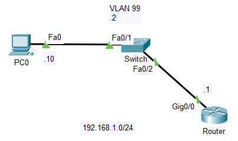
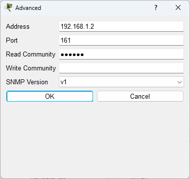
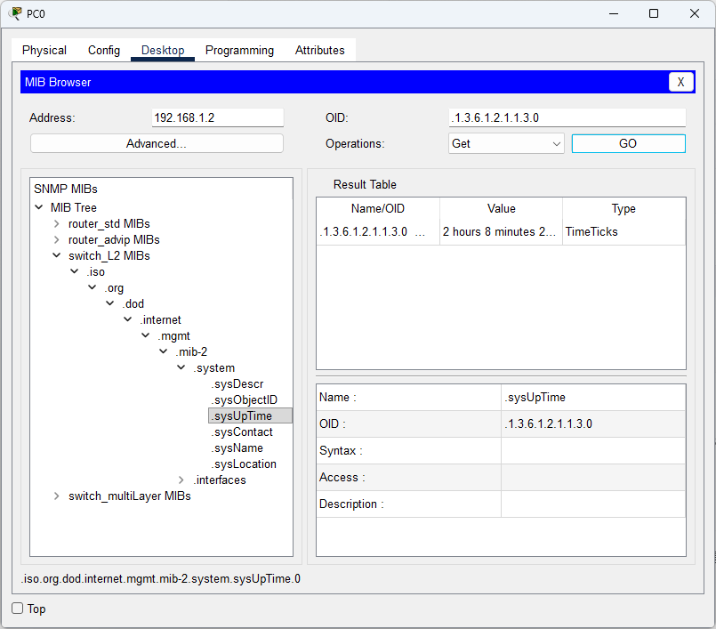

IP Address: 192.168.1.10 Subnet Mask: 255.255.255.0 Default Gateway: 192.168.1.1
Router>enable Router# configure terminal Router(config)# interface gigabitEthernet 0/0 Router(config-if)# ip address 192.168.1.1 255.255.255.0 Router(config-if)# no shutdown Router(config-if)# exit
Switch>enable
Switch#conf ter
Switch(config)#vlan
Switch(config)#vlan 99
Switch(config-vlan)# name snmp
Switch(config-vlan)#exit
Switch(config)#inter vlan 99
Switch(config-if)#ip address 192.168.1.2 255.255.255.0
Switch(config-if)#no shutdown
Switch(config-if)#exit
Switch(config)#inter f0/1
Switch(config-if)#switchport mode access
Switch(config-if)#switchport access vlan 99
Switch(config-if)#exit
Switch(config)#ip default-gateway 192.168.1.1
Switch(config)#exit
Switch(config)#snmp-server community public ro
Router(config)#snmp-server community public ro
地址
端口默认
社区名
版本 v1

地址 Address为：192.168.1.2
方法1：单击 MIB 树，依次展开至 system，单击并获取 GET
方法2：直接输入对应的 OID；注意以点 . 开始，以0结束，表示查询对象对应的实例

系统 hostname 名称 .1.3.6.1.2.1.1.5.0
Switch
系统描述 .1.3.6.1.2.1.1.1.0
Cisco IOS Software, C2960 Software (C2960-LANBASEK9-M), Version 15.0(2)SE4, RELEASE SOFTWARE (fc1) Technical Support: http://www.cisco.com/techsupport Copyright (c) 1986-2013 by Cisco Systems, Inc. Compiled Wed 26-Jun-13 02:49 by mnguyen
系统运行时间 .1.3.6.1.2.1.1.3.0
1 hours 54 minutes 33 seconds
系统服务 .1.3.6.1.2.1.1.7.0
系统接口 .1.3.6.1.2.1.2.2.1.2.1
地址 Address为：192.168.1.1
查看主机名 .1.3.6.1.2.1.1.5.0
修改主机名重新查看
Router(config)#hostname SNMPclient
查看端口速率 .1.3.6.1.2.1.2.2.1.5
查看MTU .1.3.6.1.2.1.2.2.1.4
查看路由表 .1.3.6.1.2.1.4.21.1.1
配置一条默认路由；重新查看路由表
Router(config)#ip route 0.0.0.0 0.0.0.0 192.168.1.2